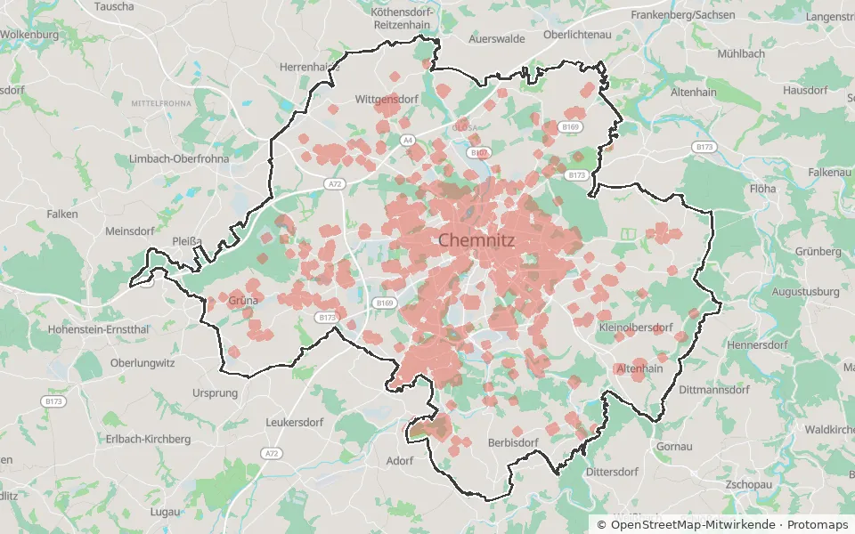
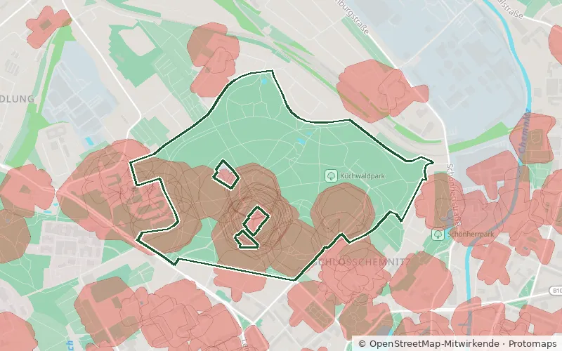
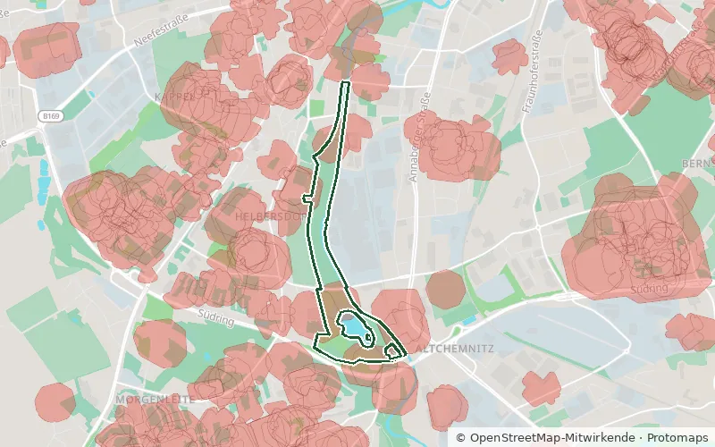
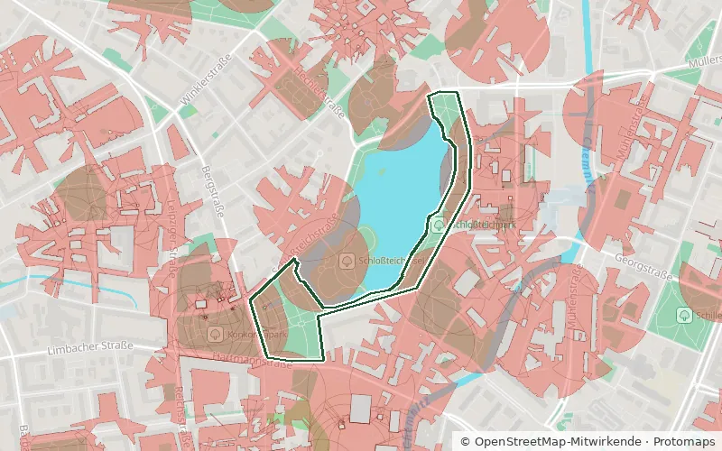
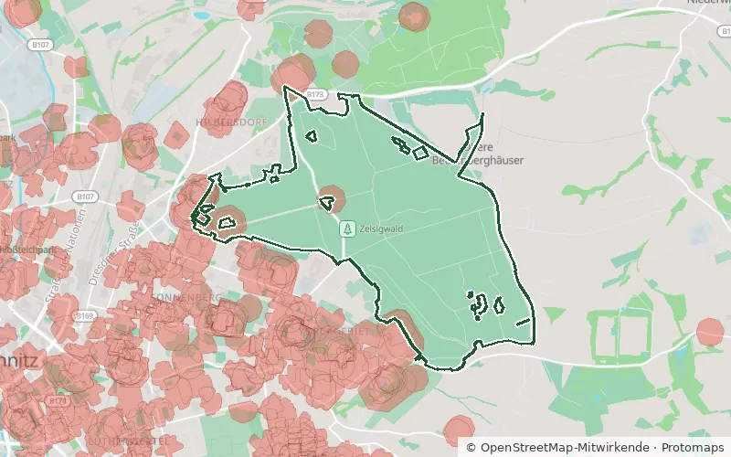
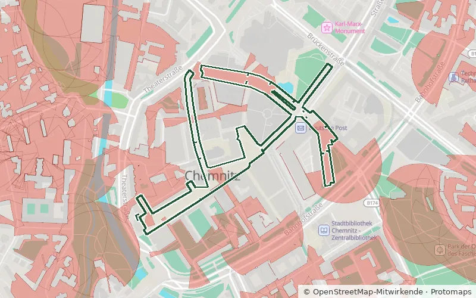
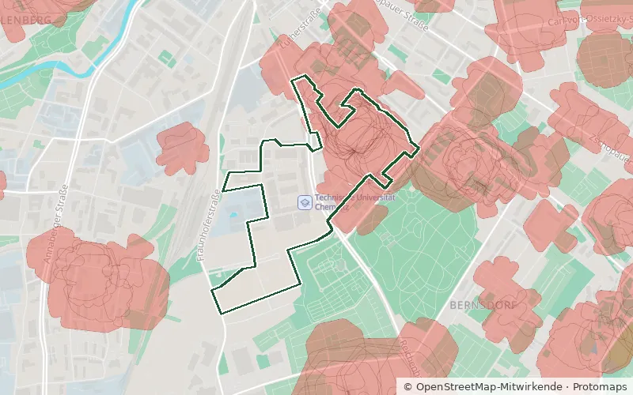

In Chemnitz ist öffentliches Kiffen auf 26 km² verboten, das sind 11,6 % der Stadtfläche von 221 km². Grund sind 1 229 Einrichtungen wie Schulen und Spielplätze: In ihrer Sichtweite, bis 100 Meter vom Eingang und ohne Gebäude dazwischen, verbietet § 5 KCanG den Konsum. Dazu kommen die Fußgängerzonen von 7 bis 20 Uhr und überall die Gegenwart von Minderjährigen.
Gut ein Sechstel der Stadt ist Wald (17 % der Stadtfläche), vom Zeisigwald im Osten bis zum Rabensteiner Wald im Westen, und davon liegen nur 4,9 % in einer Zone; ohne den Wald gerechnet sind es 13,0 %.

Woher die Zonen kommen
| Einrichtung | Anzahl | Zonenfläche |
|---|---|---|
| Schulen | 106 | 6,0 km² |
| Kitas und Kindergärten | 108 | 4,4 km² |
| Kindertagespflege | 12 | 0,3 km² |
| Spielplätze | 391 | 7,8 km² |
| Kinder- und Jugendeinrichtungen | 28 | 1,0 km² |
| Sportstätten | 584 | 14,2 km² |
Jede Art für sich gezählt, Überlappungen also mehrfach. Anbauvereinigungen nur, soweit in OpenStreetMap eingetragen.
Die meisten Zonen gehen auf die 584 Sportstätten zurück, danach auf die 391 Spielplätze. Auf Spiel- und Bolzplätzen verbietet die Grünanlagensatzung außerdem Alkohol, Glas und „zu rauchen“; sie sind von 8 bis 22 Uhr offen, ein Verstoß kostet bis zu 1.000 Euro (Grünanlagensatzung, § 3a). Die Polizeiverordnung der Stadt kennt kein Konsumverbot.
Küchwald, Stadtpark und Schloßteich
Im Küchwaldpark liegen 39 % der Fläche in einer Zone: 13 Spielplätze liegen im Park. Im Stadtpark sind es 38 %, mit zwei Spielplätzen.


Im Schloßteichpark selbst liegt keine Einrichtung, die eine Zone auslöst; wegen der Sportanlagen, Spielplätze und Schulen rundherum liegen trotzdem 59 % in einer Zone. Im Zeisigwald sind es 5 %, auf einem 100 Meter breiten Streifen Land entlang der Flüsse 16 %.


Innenstadt
Eine eigene Liste der Fußgängerzonen hat die Stadt nicht. Ihr Straßenreinigungsverzeichnis nennt aber Abschnitte von Bretgasse, Johannisplatz und Kirchgäßchen „Fußgängerzone“, und für Markt, Neumarkt, Rathausstraße, Innere Klosterstraße und einen Teil der Straße der Nationen verzeichnet es keine Fahrbahn (Straßenreinigungssatzung). In den Fußgängerzonen gilt von 7 bis 20 Uhr Konsumverbot; blau sind die Fußgängerbereiche aus OpenStreetMap.
Von Markt und Neumarkt liegen außerdem 35 % in einer Sichtweiten-Zone, vom Rosenhof 17 %; im Stadthallenpark liegt keine Zone (0 %). In den Grünanlagen Am Wall, Johannisplatz und Park am Roten Turm verbietet die Stadt von April bis Oktober Alkohol, Cannabis nicht (Stadt Chemnitz).

Der Weihnachtsmarkt steht auf Markt und Neumarkt; seine Marktsatzung sagt zu Cannabis und Rauchen nichts (Marktsatzung).
Universität und Stadion
Hochschulen sind nach § 5 KCanG keine Verbotsorte. Vom Campus der TU Chemnitz liegen 30 % in einer Zone, um 18 Sportanlagen. Die Hausordnung hat keine Regel zu Cannabis und verbietet das Rauchen nur in Gebäuden (Hausordnung).

Für Spieltage im Stadion an der Gellertstraße hat die Stadt eine eigene Polizeiverordnung: Wer erheblich unter dem Einfluss von Alkohol oder Drogen steht, darf nicht hinein; Cannabis nennt sie nicht (Polizeiverordnung).
Was sonst noch gilt
Ein Verstoß gegen § 5 Abs. 2 kostet in Sachsen 100 bis 500 Euro, in Gegenwart von Minderjährigen 300 bis 1.000 Euro (Bußgeldkatalog Sachsen). Zuständig ist die Stadt. Vier Anbauvereinigungen mit Sitz in Chemnitz hat die Landesdirektion zugelassen (Landesdirektion Sachsen); die Karte kennt sie nur, soweit sie in OpenStreetMap eingetragen sind. Eigene Verbotszonen für Cannabis hat Chemnitz nicht (Stand 27. November 2026).
Häufige Fragen
Wo darf man in Chemnitz kiffen?
Nach § 5 KCanG außerhalb der roten Flächen, etwa im Zeisigwald (5 % in einer Zone). Nicht auf Spiel- und Bolzplätzen, tagsüber nicht in den Fußgängerzonen der Innenstadt, nie in Gegenwart von Minderjährigen. Weiß heißt nicht sicher erlaubt: Hecken, Bäume und fehlende Einrichtungen kennt die Karte nicht.
Wie genau ist das?
Täglich aus OpenStreetMap gerechnet, mit Gebäuden als Sichthindernis; die Zahlen hier sind vom 27. November 2026. Eine Orientierungshilfe, keine Rechtsauskunft (wie gerechnet wird).
Fehlt eine Einrichtung? Korrekturen in OpenStreetMap stehen am Tag darauf auf der Karte; bitte nur eintragen, was es vor Ort gibt.